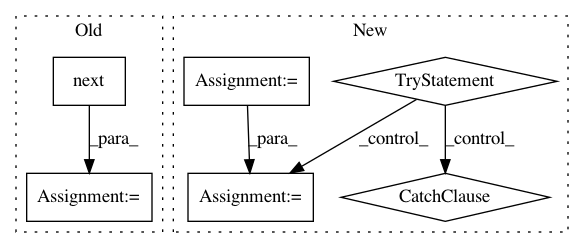

325fae8fbbc16b3c1ca40559bb2a9c783efaf440,libact/query_strategies/active_learning_by_learning.py,ActiveLearningByLearning,make_query,#ActiveLearningByLearning#,161
Before Change
wants to query.
if self.queried_hist_ == []:
// initial query
q = self.exp4p_.next(-1, None, None)
ask_idx = np.random.choice(
np.arange(len(self.unlabeled_invert_id_idx)), size=1, p=q
)[0]
ask_id = self.unlabeled_entry_ids[ask_idx]
After Change
def make_query(self):
Except for the initial query, it returns the id of the data albl
wants to query.
dataset = self.dataset
try:
unlabeled_entry_ids, X_pool = zip(*dataset.get_unlabeled_entries())
except ValueError:
// might be no more unlabeled data left
return
while self.budget_used < self.T:
ask_idx = np.random.choice(
np.arange(len(self.unlabeled_invert_id_idx)), size=1, p=q
)[0]
In pattern: SUPERPATTERN
Frequency: 3
Non-data size: 6
Instances
Project Name: ntucllab/libact
Commit Name: 325fae8fbbc16b3c1ca40559bb2a9c783efaf440
Time: 2015-11-25
Author: yangarbiter@gmail.com
File Name: libact/query_strategies/active_learning_by_learning.py
Class Name: ActiveLearningByLearning
Method Name: make_query
Project Name: nilmtk/nilmtk
Commit Name: 51f56cd2f529cbf92c0492c34510c040ed1b77fd
Time: 2014-05-22
Author: jack-list@xlk.org.uk
File Name: nilmtk/elecmeter.py
Class Name: ElecMeter
Method Name: power_series
Project Name: pysb/pysb
Commit Name: d39d3272220da5bcb0c43985e6c1e3903dac2bf5
Time: 2011-08-07
Author: jmuhlich@bitflood.org
File Name: setup.py
Class Name:
Method Name: main